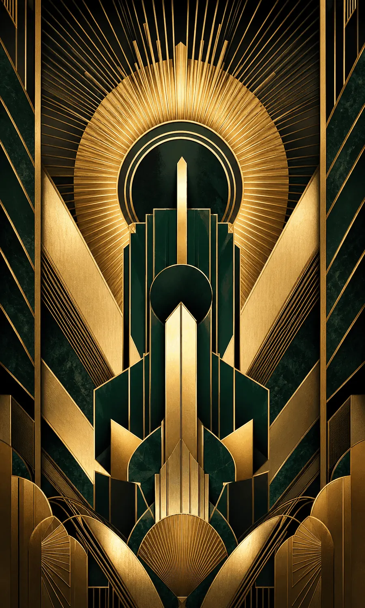

Original visual examples
Look at the path of the line

Side-by-side
The fastest comparison
| Visual clue | Art Nouveau | Art Deco |
|---|---|---|
| Line | Whiplash curves, stems, tendrils, flowing hair | Straight edges, zigzags, sunbursts, stepped profiles |
| Composition | Asymmetric, continuous, enveloping | Axial, symmetrical, tiered |
| Nature | Observed and transformed into organic structure | Stylized into repeated motifs and crisp silhouettes |
| Surface | Crafted, sensual, integrated with the object | Polished, luxurious, often emphasizing speed and modern materials |
| Era cue | Late nineteenth century to the early twentieth century | Most strongly associated with the 1920s and 1930s |
Recognition pattern
Art Nouveau: decoration that grows
Start with the contour. Art Nouveau often lets one line travel through hair, flowers, lettering, ironwork, furniture, or the edge of a poster. The V&A describes the movement as international and notes its natural forms, fluid lines, asymmetry, and integration of structure with decoration. That integration matters: ornament should feel inseparable from the object, not pasted onto it.
Do not reduce the movement to “flowers and women.” Vienna, Glasgow, Brussels, Paris, and other centers developed different balances of geometry and curvature. Some Art Nouveau work is stricter and more rectilinear than the popular Mucha shorthand suggests.
Recognition pattern
Art Deco: decoration that stages modernity
Look for organized impact: a central axis, repeated angles, sunbursts, bold geometry, and surfaces that imply lacquer, glass, chrome, stone, or light. The V&A situates Art Deco across roughly 1910–1940 and connects its print culture with bold geometric forms and fast-paced city life.
Art Deco was never a single pure formula. It absorbed influences from the avant-garde, historic European design, global decorative traditions, performance, travel, and the machine age. Use “geometric glamour” as a recognition shortcut, not as a complete history.
Creative direction
Which one fits your project?
Choose an Art Nouveau direction when…
You need a sense of organic continuity, crafted intimacy, botanical movement, or a frame that grows around the subject. It can work well for botanical storytelling, cultural programming, fragrance, or editorial concepts where line carries emotion.
Choose an Art Deco direction when…
You need ceremony, urban energy, structured luxury, or a strong architectural silhouette. It can support hospitality, fashion, film, events, and identity systems that benefit from symmetry and repeated geometric rhythm.
In either case, reference the underlying design logic rather than copying a famous poster, building, or artist's signature composition.
Limitations
Why real objects can blur the boundary
Art Deco followed Art Nouveau and adapted some of its visual language. Transitional designers, regional variants, later revivals, and contemporary styling can combine organic and geometric traits. Identify an object through date, maker, place, material, and use—not through one motif alone.
FAQ
Quick answers
Did Art Deco replace Art Nouveau?
Art Deco emerged later and drew from many sources, including the more linear and geometric strands of Art Nouveau. The change was gradual rather than a single clean break.
Is the Chrysler Building Art Nouveau or Art Deco?
It is widely recognized as Art Deco: its strong vertical emphasis, geometric crown, repeated arcs, and machine-age metalwork align with Deco's architectural language.
Can a design mix both styles?
Yes. Contemporary work often combines organic curves with Deco-like symmetry. Name the dominant structure and explain the secondary influence instead of forcing a pure label.
Sources & further reading